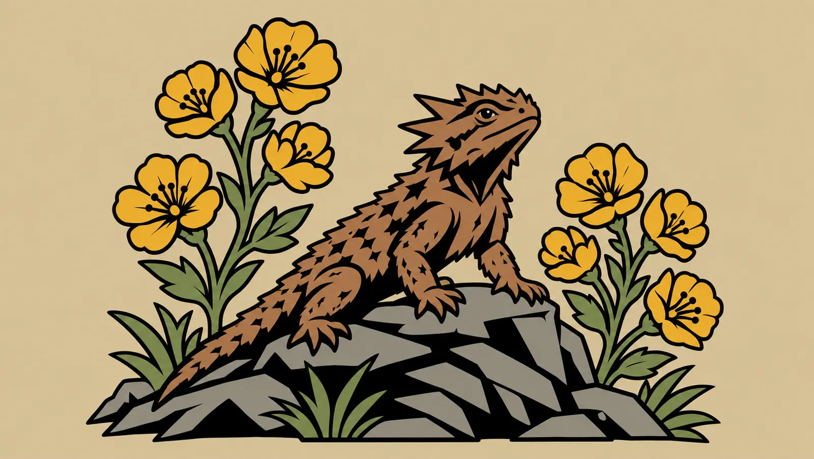

Planting instructions
How it grows
- Thrives in
- Sow
- Blooms into
- Plant beside
Contents
Plant it by ticking it in Hemo Welcome on first boot, or later with hemo-roles.
Role kits for Kali Linux
Hemo OS is a Kali-based operating system for security professionals, shipped as a ready-to-run VM image you rebuild for every engagement. Each role is a packet of tools, planted on first boot.
Log in as hemo / hemo · How to install
Pick a packet to open it. Plant as many as the job needs.
The first one you plant is your primary.

Plant it by ticking it in Hemo Welcome on first boot, or later with hemo-roles.
Every install starts from the same ground: a desktop, a shell, notes and reporting, and nothing offensive. The test for each package is whether an operator needs it, now or over a long engagement. Size alone never decides.
The base never installs Kali's default attack tools. Your tools come from the roles you plant, so every box carries one discipline's kit and nothing it won't use.
Notes in Obsidian, with Cherrytree a click away in Hemo Welcome, PDF reports from Markdown with pandoc, LibreOffice for client documents, and a fixed font and framed captures so every screenshot matches.
VPN clients for AnyConnect, GlobalProtect, OpenVPN, IPsec, L2TP and WireGuard, plus remote desktop to Windows hosts, all from the bar.
Compilers, Python headers, Go, Rust, pipx and Docker are already there, so role tools that build from source or ship as containers install without a fight.
AppArmor is on and Firefox runs in a sandbox. The firewall is installed but off, because default-deny blocks the callbacks you're waiting for. Turn it on with hemo-harden on.
VMware Tools (open-vm-tools) is baked in, so clipboard, drag and drop and window resizing work the moment you log in.
zshThe default shellzsh-autosuggestionsSuggests commands from your history as you typezsh-syntax-highlightingColors commands green or red before you run thempowershellPowerShell, a second shell with the same prompt (Super Shift Enter)goshsQuick file-transfer server (hemo-serve), HTTP/HTTPS/WebDAV/SMB with uploadminisignChecks that a Hemo release download is genuine (hemo-verify)starshipThe prompt, themed to the active roletmuxTerminal multiplexer for long-running sessions, with pane logging into the engagementneovimDefault code editor, set up with LazyVimnanoSimple editor, and the default for quick editsfzfFuzzy finder for files and historyripgrepFast search through filesbatFile viewer with syntax highlightingfd-findFast, friendly replacement for findjqReads and filters JSONgitVersion controlcurlTransfers data over HTTP and morewgetDownloads filesbuild-essentialCompilers and make, so tools that build from source install cleanlypython3-devPython headers for compiled Python packageslibxml2-devXML library headerslibxslt1-devXSLT library headerslibssl-devOpenSSL headerslibffi-devForeign-function interface headerspkg-configFinds library flags at build timepipxInstalls Python tools in their own environmentsgolangGo toolchain for Go-based toolscargoRust toolchain for Rust-based toolsdocker.ioContainer runtime for tools that ship as containersdocker-buildxDocker build and compose supportkittyThe default terminal, themed to the active role and used for the fixed-size framed screenshotsrofiApp launcher and window switcherpolybarThe status bardunstNotificationspicomCompositor for smooth, tear-free windowsautotilingSplits each new window along the longer sidepython3-i3ipcLets hemo-open place new windows on the side your mouse is oni3lock-colorScreen lockxss-lockLocks the screen when idle or before sleepautorandrRemembers display layoutsfehSets the wallpaperx11-xserver-utilsDisplay utilities (xrandr, xset)greenclipClipboard history in the launchercopyqClipboard manager with searchgammastepNight lightlxappearanceKeeps GTK apps on the dark themekali-themes-commonIcon theme for the launcher, tray and file managerlxpolkitPassword prompts for admin actionsyadSimple dialogs for Hemo scriptspython3-giRuns the Hemo Welcome control centergir1.2-gtk-3.0GTK bindings for Hemo Welcomegir1.2-gdkpixbuf-2.0Image support for Hemo Welcomepython3-pilDraws the accent-colored network iconsfonts-jetbrains-monoFixed terminal font, so screenshots matchfonts-notoWide language coveragefonts-noto-color-emojiColor emojifonts-nerd-symbolsIcon glyphs for the bar and promptfonts-font-awesomeIcon glyphs for the barobsidianThe default notes applibreoffice-writerOpens and edits client documentslibreoffice-calcSpreadsheetslibreoffice-impressPresentationslibreoffice-gtk3Keeps LibreOffice on the dark themepandocConverts Markdown notes into reportstexlive-xetexPDF engine for pandoc reportstexlive-latex-recommendedLaTeX packages for reportstexlive-latex-extraMore LaTeX packages pandoc's template usestexlive-fonts-recommendedReport fontslmodernReport fontsweasyprintTurns HTML and CSS into PDF reportsgimpImage editing for reportszathuraPDF viewer with vim keyszathura-pdf-popplerPDF support for zathurathunarFile managerthunar-archive-pluginArchive actions in the right-click menuthunar-volmanHandles plugged-in drivesyaziTerminal file manager with image previewslfFast keyboard file managermcTwo-pane file manager, also handy over SSHxarchiverArchive managerxdg-user-dirsCreates Documents, Downloads, Pictures and the other standard foldersp7zip-full7-Zip archiveszipCreates zip filesunzipExtracts zip filesudisks2Drive management serviceudiskieAuto-mounts USB drivesgvfsVirtual file systems for the file managergvfs-backendsNetwork shares and devices in the file managerntfs-3gReads and writes Windows drivesexfatprogsexFAT drive supportcifs-utilsMounts SMB sharesfirefox-esrBrowser, sandboxed with bubblewrapkeepassxcPassword managernetwork-manager-appletNetwork and VPN menu in the barnetwork-manager-openconnect-gnomeCisco AnyConnect, GlobalProtect and Pulse VPNsnetwork-manager-openvpn-gnomeOpenVPNnetwork-manager-vpnc-gnomeOlder Cisco IPsec VPNsnetwork-manager-l2tp-gnomeL2TP VPNsnetwork-manager-strongswanIKEv2 IPsec VPNsopenvpnOpenVPN from the command linewireguard-toolsWireGuard tunnelsfreerdp3-x11Remote desktop to Windows hostsopen-vm-toolsVMware guest agentopen-vm-tools-desktopVMware clipboard, drag and drop, and resizingqemu-guest-agentKVM and QEMU guest agentspice-vdagentQEMU clipboard and resizingvirtualbox-guest-x11VirtualBox clipboard and resizingbtopResource monitorfastfetchSystem info, with the Hemo lizardpipewireSound serverpipewire-pulseSound for apps that expect PulseAudiowireplumberSound session managerpavucontrolVolume mixerpamixerVolume control for the barapparmorConfines programs to what they needapparmor-utilsAppArmor toolsbubblewrapSandboxes the browserufwFirewall, installed but off until you run hemo-harden onauditdSystem audit logplymouthBoot splashplymouth-themesBoot splash themeslightdmLogin managerlightdm-gtk-greeterThe login screenlibrsvg2-binRenders the Hemo artwork for boot and loginFoxyProxySwitch the browser between proxiesCookie-EditorView, edit and export cookiesHackToolsPayloads, reverse shells and cheat sheetsWappalyzerSee what a site is built withUser-Agent SwitcherChange the browser's user agentWayback MachineLook up archived versions of a pageHemo Welcome offers Cherrytree for single-file notes, VSCodium alongside Neovim, and Kali's qterminal if you'd rather have it than kitty. Licensed tools are never baked in; they install from your own storage on first boot.
Set up your desktop however you like day to day. Before you capture evidence, press Super P and report mode snaps the whole desktop to your team's screenshot standard. The same keys bring your own look back.
hemo-report set, commit it, and the whole team inherits it.Captures save to the active engagement's screenshots folder (start one with eng new <client>) and are copied to the clipboard, ready to paste into your notes.
.7z.001, .7z.002, …) so every file stays under GitHub's size limit..001 file with 7-Zip on Windows, or run 7z x on it on Linux or macOS. The other parts are picked up automatically..ova in VMware Workstation, Player or Fusion.hemo with the password hemo, and change it with passwd when you're ready. Hemo Welcome opens so you can plant your roles.Every release is signed. With SHA256SUMS, SHA256SUMS.minisig and hemo-release.pub from the release next to your parts, run:
$minisign -Vm SHA256SUMS -p hemo-release.pub && sha256sum -c --ignore-missing SHA256SUMS
Already running Hemo? hemo-verify in the download folder does both checks with the key baked into the system.